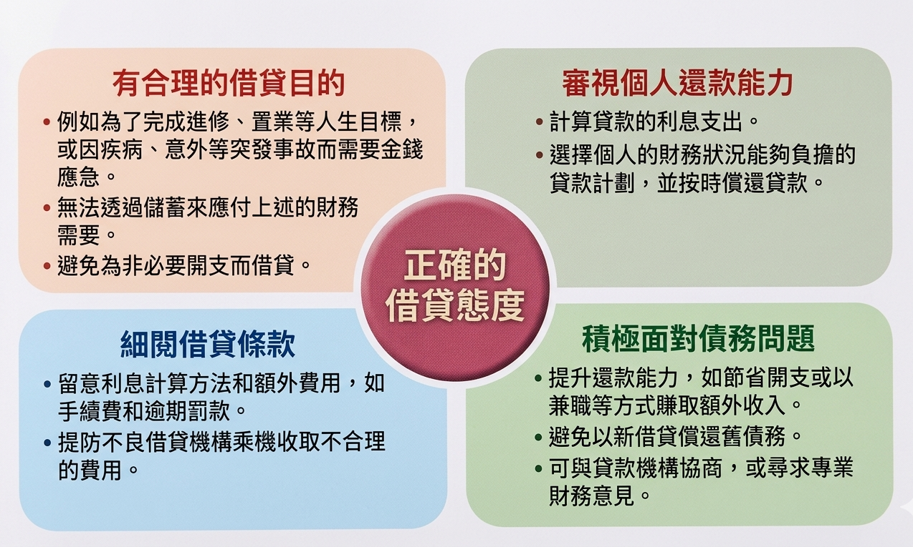

核心導讀：同學需要學會妥善運用金錢，分辨「需要」和「想要」，了解借貸的責任與風險，以及掌握投資的基本原則。
| 用途 | 說明 |
|---|---|
| 消費 | 運用金錢購買貨物或服務，滿足生活需要 |
| 儲蓄 | 把部分收入儲存起來，以備不時之需或達成未來目標 |
| 投資 | 運用金錢購買金融產品，期望獲得回報（如股票、債券） |
| 捐贈 | 把金錢捐給有需要的人或慈善機構，貢獻社會 |
| 階段 | 主要收入 | 主要支出 | 理財策略 |
|---|---|---|---|
| 讀書時期 | 零用錢、兼職收入 | 學費、日常開支、娛樂 | 養成儲蓄習慣，記錄開支 |
| 就業時期 | 工作薪金 | 生活開支、家用、投資 | 制定預算，進行投資，購買保險 |
| 退休時期 | 積蓄、退休金、投資回報 | 醫療開支、生活開支 | 謹慎管理積蓄，保守投資 |
